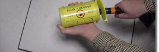
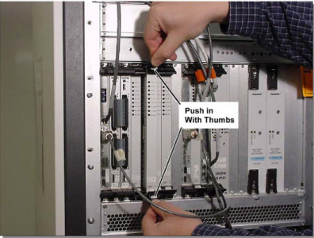
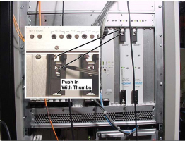

Operating Documentation
Direction 5133315-3, Rev# 14
Signa EXCITE HD 1.5T Service Methods
Module Version 1.0, Version Date 5/3/07
Operating Documentation |
| Required Persons | Preliminary Reqs | Procedure | Finalization |
|---|---|---|---|
| 1 | Not Applicable | 1 hour | Not Applicable |
| Last Update | 02//23/2005 |
| Item | Qty | Effectivity | Part# | Manufacturer | |
|---|---|---|---|---|---|
| ESD Wrist Strap | 1 | - | - | - | |
| Screwdriver | 1 | - | - | - | |
| ||||
| Electrocution Hazard! | ||||
| Dangerous and or fatal voltages are present in the energized cabinet. | ||||
| Follow loto steps as given in first section of this document to disable and verify safe voltage levels.. |
Prepare for shutdown of equipment. Notify affected personnel working in the area that LOTO is being performed.
Remove the cover from the front of the ACGD cabinet.
Power off the SSM circuit breaker.
Attempt to power on equipment in RF Accessory Cabinet, if no power present proceed.
Remove Plug from rear of RF Accessory Cabinet.
Using DMM, measure voltage at plug to ensure no power present.
Lock out the power plug, Illustration 1.
Illustration 1: Secure Power Plug

Ensure power has been removed from the cabinet as described in RF Accessory Cabinet Power Down and LOCKOUT/TAGOUT Procedure.
Refer to Illustration 2, and Table 1 for circuit board parts identification.
Illustration 2: ASC Chassis - Front View

Table 1: Circuit Board Parts Identification
| Slot Number | Board Name |
| 18 | Input Panel |
| 16 & 17 | Power Supply |
| 15 | UPM 1 Processor Board |
| 14 | UPM 1 NB RF Detector Board |
| 13 | UPM 1 BB RF Detector Board |
| 12 | UPM 2 Processor Board |
| 11 | UPM 2 NB RF Detector Board |
| 10 | UPM 2 BB RF Detector Board |
| 8 & 9 | NB Amp Interface Board |
| 6 & 7 | Opt. BB Amp Interface Board |
Circuit Board Removal/Replacement Procedure
Attach a grounding wrist strap.
Where applicable, remove the cables (Sub D, SMB, etc.) from the face of the board.
Loosen the two faceplate holding screws (one located at the top and bottom of the faceplate). These screws are captive to the faceplate, and do not need to be completely removed.
Using your thumbs, push in the grey release tab (Illustration 3), and gently pull the extractor tab located on the bottom of the circuit board. Refer to Illustration 4 for the proper direction. The lever action of the ejectors will disengage the circuit board connections from the chassis.
Illustration 3: Faceplate Release Tabs

Illustration 4: Faceplate Ejector Action

Slide the circuit board all the way out of the card cage, being careful not to bend or bind the card in any way.
| NOTE: | The circuit board should be handled using only the faceplate, ejectors, and the edges of the board. |
| NOTE: | When replacing the board the 50 ohm terminators must be taken from the old board and placed on the new board. |
Place the card in an appropriate shipping package, or discard, if applicable.
Reverse The Process For Installation
Remove the packing material from the replacement board, and gently slide the circuit board along the slot guides into the chassis.
Gently engage the circuit board connectors with the backplane. If it doesn’t feel like the circuit board is properly engaging the backplane, remove the board and check the connectors for bent or broken pins.
Once the board ejectors contact the ASC chassis faceplate, gently push the ejectors in to the center of the board. This action will cause the ejectors to insert the board into the chassis. Do not attempt to use anything other than the ejectors to insert or remove the board from the chassis.
Tighten the faceplate holding screws to secure the circuit board to the cardrack.
| NOTE: | Do not over-tighten these screws. |
Where applicable, re-attach the cables to the face of the board.
Refer to the POWER-UP Power-Up procedure for the steps required to restore power to the RF Accessories Cabinet.
Refer to Finalization, for checkout and proper operation.
Power Supply Module Removal/Replacement
Refer to the Power-Down procedure for the steps required to remove power from the Systems Cabinet.
Power Supply Module Removal/Replacement Procedure
a. Attach a grounding wrist strap.
b. Loosen the three faceplate holding screws (one located at the top and two at the bottom of the faceplate - see Illustration 5). These screws are captive to the faceplate and do not need to be completely removed.
Illustration 5: Power Supply Faceplate Holding Screws

Using your thumbs, push in and then gently pull the extractor tab located on the bottom of the circuit board (refer to Illustration 3 for proper direction). The lever action of the ejectors will disengage the supply module connections from the chassis.
Slide the power supply module all the way out of the card cage.
| NOTE: | The modules should be handled using only the faceplate, ejectors, and the edges of the module. |
e. Place the module in an appropriate shipping package.
Reverse The Process For Installation
Remove the packing material from the replacement module, and gently slide the module into the chassis.
Use the ejectors to insert the board into the chassis.
Tighten the faceplate holding screws to secure the power supply module to the cardrack.
| NOTE: | Do not over-tighten these screws. |
Refer to the POWER-UP Power-Up procedure for the steps required to restore power to the RF Accessory Cabinet.
Refer to Finalization, for final check out steps.
MGD Chassis Removal/Replacement
Refer to the Power-Down procedure RF Accessory Cabinet Power Down and LOCKOUT/TAGOUT Procedure for the steps required to remove power from the Systems Cabinet.
Attach a grounding wrist strap.
Remove all boards and store them in a static-safe location. See Circuit Board Removal/Replacement, Step 3 for removal instructions.
Remove the Power Supply Modules. See Power Supply Module Removal/Replacement for removal instructions.
Remove the four screws that hold the ASC Chassis to the cabinet frame.
Slide the ASC Chassis out of the RF Accessory Cabinet.
Reverse The Process For MGD Chassis Installation
Attach a grounding wrist strap.
Slide the ASC Chassis into the RF Accessory Cabinet.
Install the four screws that hold the ASC Chassis to the cabinet frame.
Install all boards. See Circuit Board Removal/Replacement, Step 2 for installation instructions.
Replace Power Supply Modules. See Power Supply Module Removal/Replacement for installation instructions.
Before power is reapplied to the RF Accessory Cabinet, please verify the following conditions exist:
All circuit boards are seated properly into the backplane, and the faceplate screws are tightened.
All cable connections are in place and secured properly.
All covers and panels have been secured properly, and there is no loose hardware resting on any of the surfaces.
Refer to LOTO processes/training to follow steps of reapplication of power.
Reset TPS to insure the system will download.
If you replaced a NB RF Detector Board or a NB Amp Interface Board, run the Universal Power Monitor - Head Setup and Calibration and Universal Power Monitor - Body Setup and Calibration.
If you replaced a BB RF Detector Board or a BB Amp Interface Board, run the Universal Power Monitor - MNS Setup and Calibration.
Run UPM Diagnostics to ensure proper functionality.
Run one head or body scan.